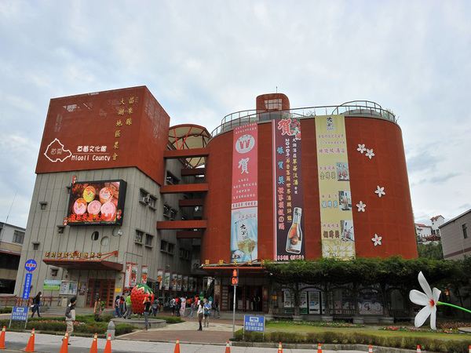
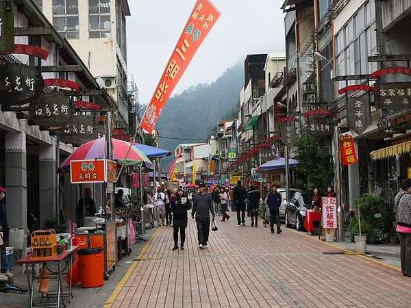
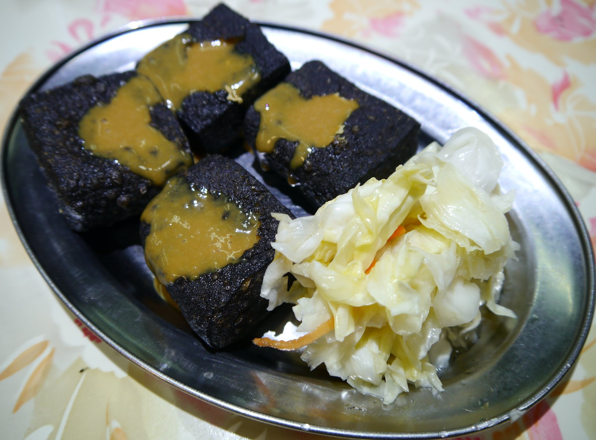
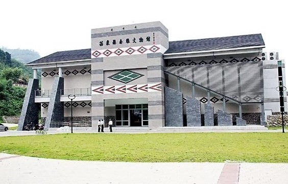
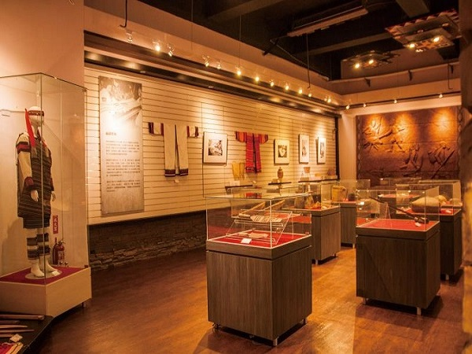
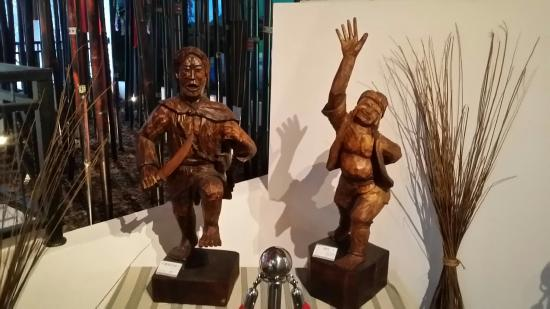
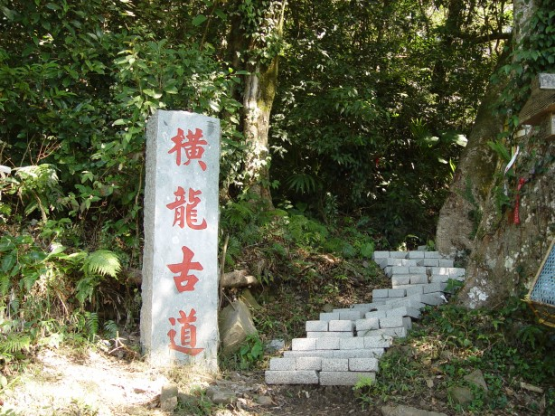
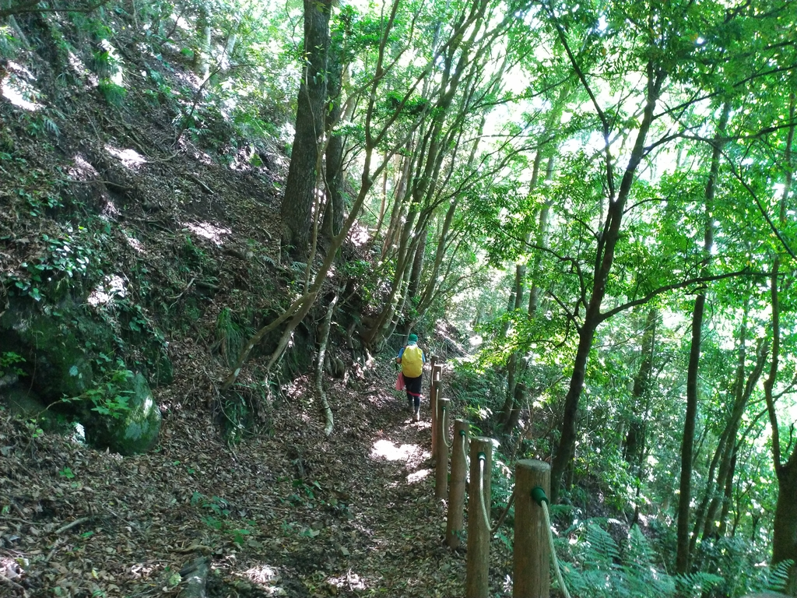

附近景點
泰安
1.大湖酒莊
大湖草莓文化館(大湖酒莊)位於大湖觀光風景線上(省道台3線130.5K)，為大湖地區農會的硬體結構之一；旁邊則為大湖酒莊，酒莊內設有製酒中心及品酒中心(販售農特產品、酒品區)。
大湖草莓文化館四面群山環繞，這兒的超大草莓模型及超大油桐花模型，總成為觀光客相爭拍照留念的最佳取景點。
文化館共有5層樓，一樓提供各式草莓紀念商品及農特產品。
二、三樓介紹草莓的生態、發展史及食用方式
四、五樓設有餐廳及空中花園，玩家們可在此喝喝咖啡享用美食，並且欣賞大湖地區宜人的景緻。
2.汶水老街
汶水老街是苗六線前往草莓故鄉－大湖的交通必經之地，也是早期獅潭、泰安、大湖地區前往苗栗的交通樞紐與貨物集散地。
台７２線東西向快速道路通車之後，大量車潮不再從此湧入，汶水老街逐漸蛻變成為具有人文、藝術氣息的街坊市集，提供遊客休閒遊憩的好去處。
無論是造型別具巧思的招牌，還是賦有藝術質感的地磚，漫步在汶水老街，彷彿走入時光隧道，發掘客家歷史發展的痕跡，以及濃厚的鄉下人情味。
3.虎山吊橋
在早期，位在孤島上的虎山溫泉會館，虎山吊橋是前往島上唯一的聯絡通道，雖然吊橋有些窄，都還很安全做好，橋上還有日光燈供晚間照明，應是溫泉業者妥善管理的緣故。
現在的話是從苗62縣道過來，往老字號川中島虎山溫泉的人行吊橋，位置在公路邊下層停車場旁。
於汶水溪近幾年河道淤積，吊橋高度跟以往不大一樣，兩旁景觀也因爲近年來的開發遭到些微的破壞，過吊橋後經過一個小公園即可到虎山溫泉。

4.洗水坑豆腐美食
苗栗泰安鄉景點清安豆腐街(又名洗水坑豆腐街)。
老街上的道路是屬於石板的道路，可以看到的古早味招牌與古早味美食小吃，是這邊的特色
小吃又以豆腐美食最多，因此有其豆腐街的美名。
比如這邊的豆乾。
還有豆腐水粄是這邊最為特色又特別的點心。

以及在其他地方難以見到的黑色臭豆腐也可以來嘗試看看。

5.泰雅文物館
為了積極保存和推廣泰雅文化，所以特別成立「泰雅原住民文化產業區」，園區占地約一點六七公頃，結合泰安溫泉區的觀光資源與泰雅文化，設置文物館、停車場、溫泉體驗區等。

泰雅文物館展示內容有泰安鄉部落分布及遷移、當地泰雅族文化歲時祭儀介紹及照片，並有木雕、藤編器具、織品服飾、口簧琴等文物展示
設置夜間森林體驗區、傳統生活竹屋區等，使遊客共同參與歷身體驗，搭配生動活潑的解說導覽，將藉以提昇國人民族教育知識及拓展民族視野。
除了靜態展示之外，戶外也設有溫泉體驗區、假日藝文表演及攤販區，讓來到這邊參觀的民眾也能享受原住民歌舞及部落美食，希望透過有效經營帶動原住民文化觀光發展，傳承泰雅傳統文化，以展現原住民族優厚的文化元素及觀光資源，提供給遊客遊憩，帶動原鄉觀光產業的發展。
泰雅族風俗文化活動
6.馬拉邦國家森林步道
馬拉邦古道為早年泰雅族北勢群交通往來及狩獵的山徑，日治時代闢為隘勇路，曾發生泰雅族人抗日事件，立有紀念碑。
步道經杉木造林地、櫸木植群，四季各有特色，春天的桃花、夏季的綠竹、秋天的楓紅，冬日的寒梅。

山頂可遠眺蜿蜒群山的大安溪、大霸尖山及雪山之間的聖稜線。
7.橫龍古道
這條由鹿場越嶺加里山，沿著橫龍山稜線至龍山部落的山間小徑。


原是泰雅族人走出來的獵徑， 後來也成為龍山部落的泰雅人與鹿場族人之間往來的探親道路，稱為「斯瓦細格古道」，現在則以「橫龍古道」而聞名。
 333桃園市龜山區德明路5號
333桃園市龜山區德明路5號 TEL:(03)1234-5678
TEL:(03)1234-5678 EMAIL:123456789@gmail.com
EMAIL:123456789@gmail.com